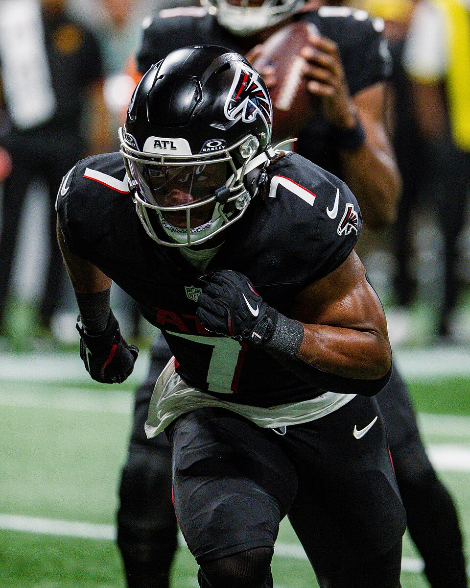

Week 2
Power Rankings
The table is a points ranking this week and tells you almost nothing. Here is what the ten rosters are actually worth, with a 0-2 team third and a 2-0 team seventh.

Bijan Robinson: All-Pro Reels / CC BY-SA 4.0
Method
Why the standings are useless this week
Every head-to-head result in week 1 matched its median result, so the table sorted itself into the exact order of points scored and five teams are 2-0 for no better reason than that they scored in the top five once. A one-week points ranking is not a power ranking, and anyone sitting at 0-2 already knows it.
So these rankings start from what each roster is worth rather than what it did on Sunday. Every player on every roster is scored through our own settings using season projections, the best legal lineup is assembled from each, and that total is the baseline. Week 1, bench depth, the quarterback situation and five seasons of history move teams around from there. The order below is an opinion, and nine of the ten teams end up somewhere different from where the table has them.
The ten
Where everybody actually stands
LeBron Offensive Foul · evspade · 2-0
The best roster in the league by our own scoring and the deepest bench in it, and he went 2-0 in a week when his superflex gave him 0.62. Christian McCaffrey, Derrick Henry and De'Von Achane did the work while Jalen Coker scored 31.80 from the bench, which is the definition of a team that can absorb a bad Sunday. Kyler Murray is in concussion protocol and Bo Nix, projected 312 for the season, is already sitting behind him. Nobody has ever repeated as champion here. This is the best-equipped attempt anyone has made.
Who Dey and the Blowfish · TheSoop · 2-0
The 204.92 was the highest score in the league and it did not come from one player getting lucky: Josh Allen 35.66, Ashton Jeanty 33.20, David Montgomery 28.40, Zay Flowers 25.50 in half a game. Allen and Joe Burrow project 701.3 between them, the best quarterback pair in the league by 23 points. The roster sits fourth in overall strength rather than first, which is the honest gap between this team and the one above it, and Flowers is day to day with a hamstring.
Fryder-Man: Brand New Day · ceefry · 0-2
Second-best roster in the league and a record that says nothing about it. Bijan Robinson projects 388 and Lamar Jackson 359, the strongest top two anyone owns. He scored 149.80, the seventh-best total of the week, and drew the one opponent who put up 204.92. He also left Tyler Shough and his 25.70 on the bench behind Baker Mayfield at 11.64, which is the kind of thing that stops mattering once the record catches up to the roster. He won the 2024 title from the sixth seed at 6-8, so he of all people is not going to panic in September.
Irrational Exuberance! · geauxjack · 2-0
He scored 182.10 with Ja'Marr Chase contributing 2.70, which is the best evidence available that the starting eleven is deep enough to survive a dead week from a first-rounder. Trevor Lawrence and Dak Prescott both project above 310. The bench is where it thins out, eighth in the league at 1013.6, so one injury costs him more than it costs anybody ranked above him. He owns the best head-to-head profile in league history and has never won anything, which by now is less a joke than a pattern.
Willis’s Willies · KnightRider_85 · 2-0
Third-best roster in the league and ninth of ten at quarterback, which is this team in one line. He swept while getting 16.96 out of two quarterback slots. All four of his quarterbacks are NFL starters, and the one projected highest of them, Malik Willis at 306, watched week 1 from the bench scoring 18.20 while Sam Darnold left injured on 0.52. Jaxon Smith-Njigba, Saquon Barkley, Breece Hall and Chase Brown are why the record does not look like the quarterback room.
4th and 35 · derrek777 · 0-2
Ranked above a 2-0 team deliberately. He owns Jahmyr Gibbs, the highest projected player on any roster in this league at 389, the fifth-strongest roster overall, and he lost week 1 as the biggest favourite on the board at 64% because he ran into the second-highest score in the league. His bench totalled 42.30, the smallest of anyone, so there was no better lineup sitting there unused. Losing twice while starting close to your best available team is bad luck rather than bad process.
Bison Circle Buttercups · CaptainClark · 2-0
The only 2-0 team ranked below a 0-2 one. He beat Rancor Fajitas by 3.76 and cleared the median by 1.31, so both of his results arrived on the thinnest margins available in the format, and Caleb Williams putting up 38.26 is not a weekly event. Seventh in roster strength. The quarterback room is real, with Williams and Brock Purdy projected 318 and 315, and he reached the 2025 championship game on three adds and no FAAB at all, so writing him off has historically been a mistake.
Skinned Knee Varsity · brunosilvadev · 0-2
Jonathan Taylor at 337 and Kenneth Walker at 297 are as good a pair of running backs as anyone has, and he still scored the fewest points in the league. The reason is two quarterbacks rostered and 514.3 projected between them, which is 77 points below the next-worst room in a league where you start two of them. Week 1 gave him 15.64 from those slots. This league has completed four trades in its entire history, so the repair job is waivers or nothing.
Rancor Fajitas · ProfessorMerlyn · 0-2
Tenth in roster projection and closer to 2-0 than anybody else down here. He lost by 3.76 and missed the median by 2.45, and starting the tight end already on his bench would have covered both. He also produced the best superflex week in the league, Bryce Young at 32.44, choosing him over Patrick Mahomes and being right by nine points. Remove the tight end slot and he was fourth of ten in scoring. The roster is thin and week 1 was not the evidence for it.
OneManEra · 0-2
Drake Maye and Jalen Hurts project 677.9 between them, second only to TheSoop, and then the roster runs out faster than anyone else's: 924.0 from the top six on the bench, last in the league by 54. He answered 0-2 by claiming Kirk Cousins and Tua Tagovailoa, who project 39 and 94 for the season and cannot both start behind two quarterbacks he is never benching. He is also the only founder in this league with a ring, and he won it the year the league was eight teams and he led it in points.
The disagreements
Where this is furthest from the table
ceefry sits third here and seventh in the standings, the widest move either way. He has the second-best roster in the league and drew the only team that scored 200. CaptainClark moves the other way, from fifth in the table to seventh, on the grounds that winning two results by a combined five points is not the same as being the fifth-best team.
The bottom three are the same three names on both lists, in a different order. brunosilvadev, ProfessorMerlyn and OneManEra are all 0-2, all carrying the thinnest rosters in the league, and none of them has an obvious way to fix that before October in a league that does not trade.
These run every week, and the number worth watching is how far a team moves between them once the record starts telling the truth.


{kind=link}